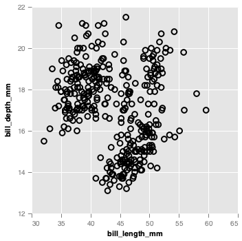
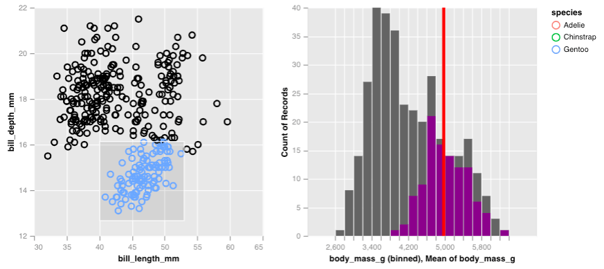

The virgo package enables the creation of interactive graphics for exploratory data analysis. It is an idiomatic and opinionated R interface to the grammar of graphics implemented by Vega-Lite which defines the following elements:
- aesthetic mappings/encodings via
enc() - graphical elements like
mark_point(), with themark_*family of functions - interactive objects, such as brushes (using
select_interval()) and sliders (usinginput_slider()), via theselect_*andinput_*family of functions - interactive calculations, for example mean (using
vg_mean()), via thevg_*family of functions - data transformations on selection objects for rich interactivity, with {dplyr} verbs
- plot composition via faceting and concatenation using
facet_views(),hconcat()andvconcat()
Installation
You can install the development version of virgo from GitHub with:
# install.packages("remotes")
remotes::install_github("vegawidget/virgo")Get started
For most graphics using virgo, you start off by passing data to the vega() function, add graphical elements with marks like mark_point(), and specify variables within a mark using encodings enc(). You can add more layers by specifying additional marks like mark_smooth(), or include small multiples with facet_views() or combine plots or add interactive elements with selections.
Let’s see an example, here we show how we can compose a simple scatter plot and gradually build up to a scatter plot with brushing, to a side by side scatter plot.
library(virgo)
library(palmerpenguins)
p <- penguins %>%
vega() %>%
mark_circle(
enc(
x = bill_length_mm,
y = bill_depth_mm
)
)
p
Interactive elements are generated using selections, for example, we can generate a rectangular brush with select_interval() and then highlight points that fall into the brush using encode_if():
selection <- select_interval()
p <- penguins %>%
vega() %>%
mark_circle(
enc(
x = bill_length_mm,
y = bill_depth_mm,
color = encode_if(selection, species, "black")
)
)
p
Once a selection is created, it can be passed into other marks, in order to perform a filter. Here, we create a chart with two histogram layers, the first will represent the overall distribution of penguin body masses, while the latter will be the distribution conditional on the selection, and will be shown in purple. We also overlay a vertical line to demonstrate the interactive average given the selection.
p_right <- penguins %>%
vega(enc(x = body_mass_g)) %>%
mark_histogram(bin = list(maxbins = 20)) %>%
mark_histogram(color = "purple", bin = list(maxbins = 20),
selection = selection) %>%
mark_rule(enc(x = vg_mean(body_mass_g)), color = "red", size = 4,
selection = selection)
p_right
By itself, this histogram isn’t too exciting but if we place along side the scatter plot of penguin bill measurements, we can see how the body mass counts change as we brush over the scatter plot. All we have do is simple concatenate the plots horizontally!
hconcat(p, p_right)
From this, we learn that the chinstrap and adelie penguins are generally lighter and are less variable in their body mass compared to gentoo penguins. The gentoo penguins are heavier, but also have a larger range of masses.
Lifecycle

The virgo package is under rapid development and we are still working through our ideas for incorporating interactive graphics into exploratory data analysis. If you have feedback we would love to hear it!
Acknowledgements
- Vega/Vega-Lite developers
- Ian Lyttle, Hayley Jepson and Alicia Schep for their foundational work in the vegawidget package